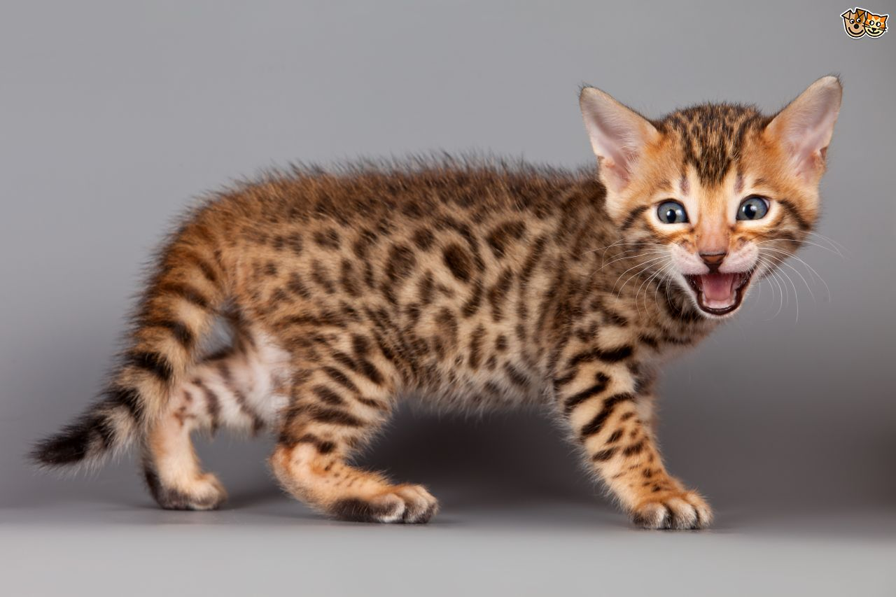

All about cats
more and more cats
The cat (Felis catus) is a small carnivorous mammal.[1][2] It is the only domesticated species in the family Felidae and often referred to as the domestic cat to distinguish it from wild members of the family.[4] The cat is either a house cat or a farm cat, which are pets, or a feral cat, which ranges freely and avoids human contact.[5] A house cat is valued by humans for companionship and for its ability to hunt rodents. About 60 cat breeds are recognized by various cat registries.
More information about catsWhy I love cats
- 